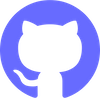

nick benson
FULL-STACK DEVELOPER

Hi! I recently graduated from the full-stack developer bootcamp at
Northcoders, and am actively seeking new opportunities.
I’m working mainly in Node.js, but primed to add new tech to my
toolbelt and develop skills on both front- and back-end. Find me on
LinkedIn
and
GitHub.
Projects
BACKEND
NC News API
My first fully-functioning backend project! An API serving news articles with nine useful endpoints. Soon to be expanded on frontend... Working in Node.js, Express, PSQL & Knex
FRONTEND
Blurble App
I worked in a team on this platform for hosting book clubs, using React Native. Blurble lets book clubs read together virtually, and lets readers build communities around books they love.
Portfolio site
My portfolio is a space where I'm learning the ins and outs of HTML and CSS. See my progress on GitHub and in the Journal section below.
FULL-STACK
Title of project
Details
JOURNAL
Title of project
Details